1
打开生成器首页
浏览器访问 https://singbox.dingdang.de5.net/，默认界面长这样：左边是直连协议与端口、Argo、WS-CDN，右边是全局配置与 Socks5。

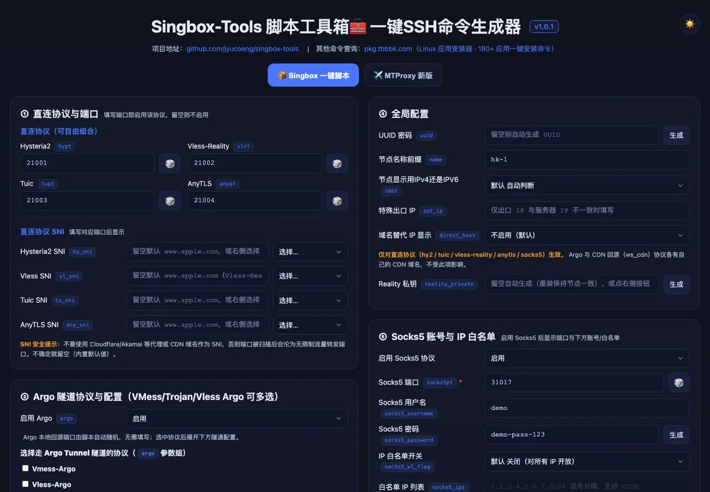
一键命令生成器（singbox-tools）能直接给你一条临时订阅地址，但 cloudflared 隧道每次重启都会换域名，客户端就要重新导入。本教程用 sub-merge 把节点汇总到 Cloudflare Worker + D1，客户端从此只认一个固定地址。
先把东西备齐，后面一路点下去就不会卡住。
*.workers.dev 一样能跑。几个名字必须一字不差：D1 绑定的变量名是 DB，口令是 SUB_TOKEN、ADMIN_PASSWORD、REPORT_TOKEN，全都区分大小写。变量名写成 DB_NAME 之类会直接报 env.DB is undefined。
整个流程的数据流向是这样的：
生成器上跟固定订阅有关的是两栏：⑦ 节点订阅是脚本给本机生成的临时订阅（本教程用不上，保持关闭即可），⑧ 节点上报才是把节点推给 sub-merge 的开关。
浏览器访问 https://singbox.dingdang.de5.net/，默认界面长这样：左边是直连协议与端口、Argo、WS-CDN，右边是全局配置与 Socks5。

四项直连端口都填上、Argo 与 WS-CDN 三个协议全选、Socks5 打开、节点上报开启，界面会展开成下面这样，最下方就是生成好的 SSH 一键命令。
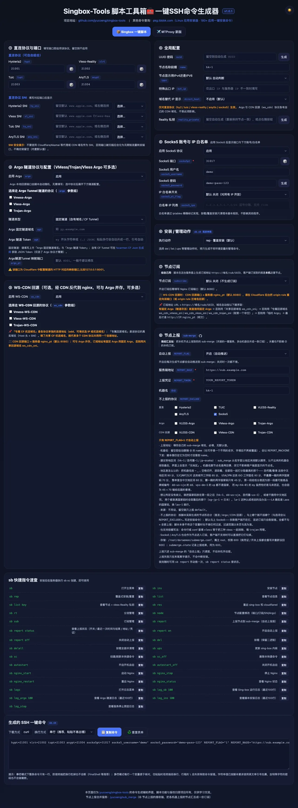
这两栏里只有 ⑧ 是要动的，⑦ 保持默认就行：
https://域名/sub/UUID，重启换域名就失效。保持默认「关闭」，固定地址交给 sub-merge；https://sub.example.com），上报凭证填 REPORT_TOKEN（不是 SUB_TOKEN，两个口令各管一头）；name，多台机器千万别填成一样的，否则上报会互相覆盖。⑧ 要填的域名和上报凭证，都得先有一个 sub-merge，所以先把它部署起来——这正是第二部分要做的事。
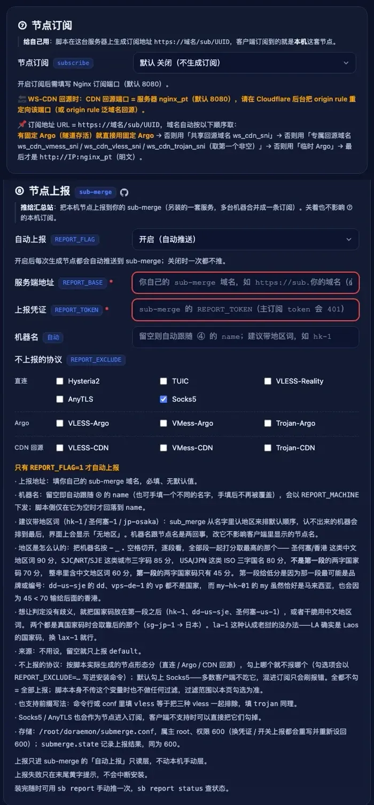
⑧ 里带红色星号 * 的是必填项：服务端地址（你的 sub-merge 域名）和上报凭证（REPORT_TOKEN）两个都得填。缺任一项只是跳过上报——节点照样装在本机上、SSH 命令照常输出，只是 sub-merge 那边不会多出节点，装完会有一行 ⚠️ 已开启自动上报，但还没配置上报地址/上报凭证，本次跳过 的提示。想补，再跑一次 sb report 单独上报即可。
走 Workers 单文件方式：一个文件、一个 D1 库，全程在网页上点，本地不用装任何东西。
Cloudflare 控制台左侧选 Storage & Databases → D1 SQL Database → Create database，名字填 sub-merge-db。
sub-merge 的数据（机器、节点、订阅档案、短链）全部存在 D1 里，不是 KV，别建错类型。
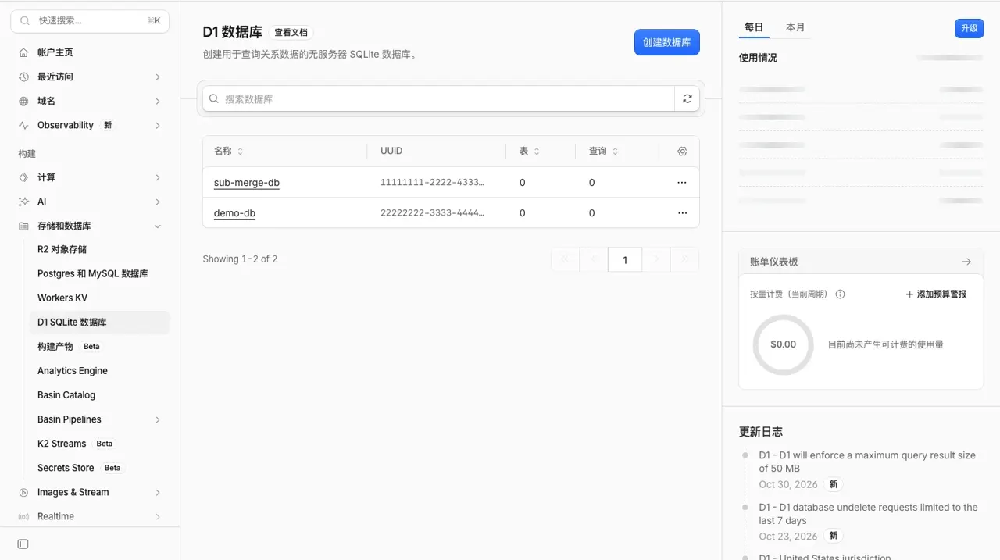
sub-merge-db。点进刚建好的库 → 顶部 Console，把仓库里 scripts/schema.sql 的全文粘进输入框，点 Execute。
一次会建好 machines / reports / presets / links / settings 五张表；语句是幂等的，重复执行也不会报错。
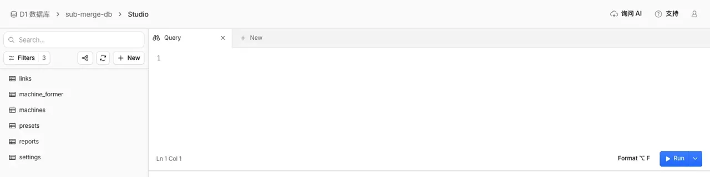
SELECT name FROM sqlite_master）能看到建好的表。打开 github.com/jyucoeng/sub_merge 根目录的 worker.single.js，点右上角 Raw 看纯文本，Ctrl+A 全选、Ctrl+C 复制。
这就是全部代码，一个文件约 260 KB，不用 npm、不用构建。
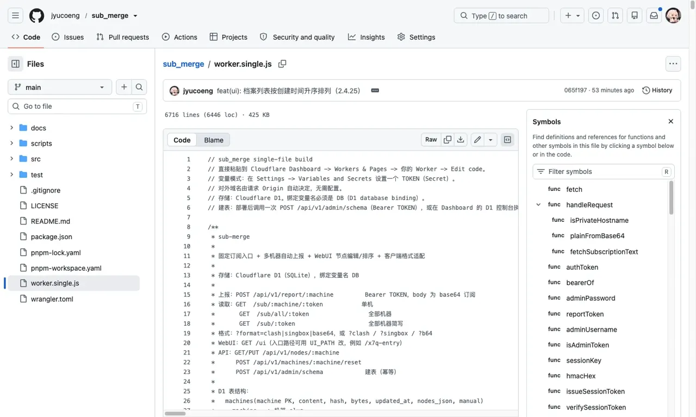
worker.single.js，右上角 Raw 就是纯文本，全选复制即可。控制台 → Workers & Pages → Create → Workers → Hello World，名字填 sub-merge → Deploy。
然后点 Edit code 进在线编辑器：把默认的 Hello World 代码 Ctrl+A 全选删掉，粘贴刚复制的代码，右上角点 Deploy。
260 KB 粘进去编辑器会卡几秒，等代码高亮完再点 Deploy，中途别刷新页面。
这一步漏了就会报 env.DB is undefined 或 401。
回到 Worker → Settings → Bindings → Add → D1 database：
DB（一字不差，代码里取的就是这个名字）；sub-merge-db。填成 DB_NAME、DATABASE 之类都不认，会直接报 env.DB is undefined。
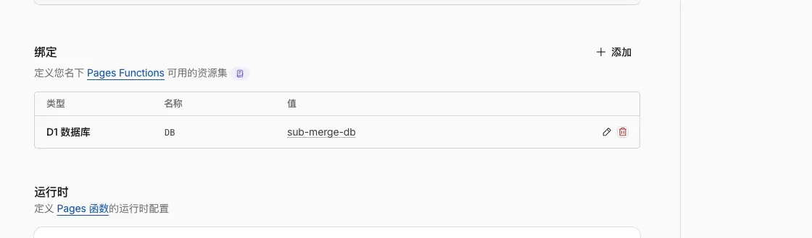
DB、值 sub-merge-db。用 Pages 部署的话，这块在项目的 设置 → 绑定 里，界面和这里一模一样，只是标题写着 Pages Functions。
还在 Settings 里，进 Variables and Secrets → Add，加三条，Type 都选 Text：
SUB_TOKEN：订阅链接里的口令，出现在 /sub/all/<SUB_TOKEN>。3f9c1a7e-5b2d-4c8a-9e61-7d0b2ac4f18eADMIN_PASSWORD：WebUI 登录口令，自己记得住就行，不必是 UUID。YourAdminPass-2026REPORT_TOKEN：服务器上报用的口令，只给上报脚本用。b7d4e2f1-8a3c-4f59-b1d0-6c92ae5713ff建议三个口令直接用 UUID：36 位、只有字母数字和连字符，粘贴不会因为空格或特殊字符出错，也不用担心长度不够。打开 https://1024tools.com/uuid 连点三次，拿到的三串分别填进 SUB_TOKEN、ADMIN_PASSWORD、REPORT_TOKEN 就行。
三个口令互相独立，别用同一串；上面示例里的值只是示范，请换成你自己生成的。SUB_TOKEN 会出现在订阅链接里，泄露了也不会连带 REPORT_TOKEN。
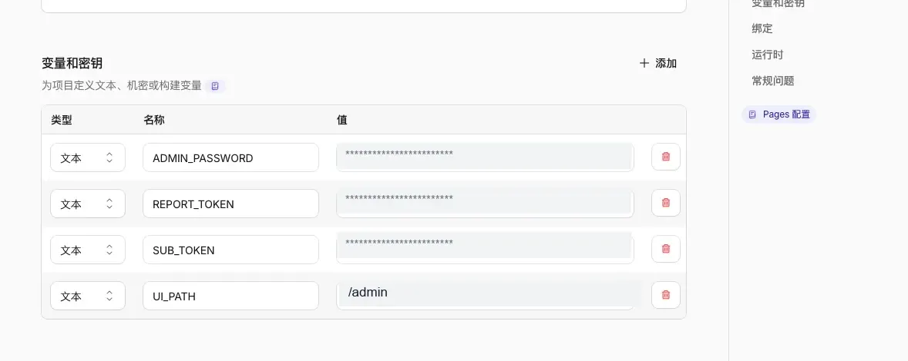
UI_PATH，改过 UI_PATH 登录地址就变成 /admin 这种；图中口令已打码。变量和绑定改完，必须再点一次 Deploy——环境变量只对新的部署生效，光加变量刷新页面是没变化的。
然后打开 https://<你的-worker>.workers.dev 后面接你的入口路径：默认是 /ui；如果你在环境变量里设了 UI_PATH（例如 /admin），入口就变成 /admin，这时候 /ui 会直接返回 404、页面一片空白，不是坏了。用 ADMIN_PASSWORD 登录，能看到机器列表就说明 Worker、D1、口令都通了。
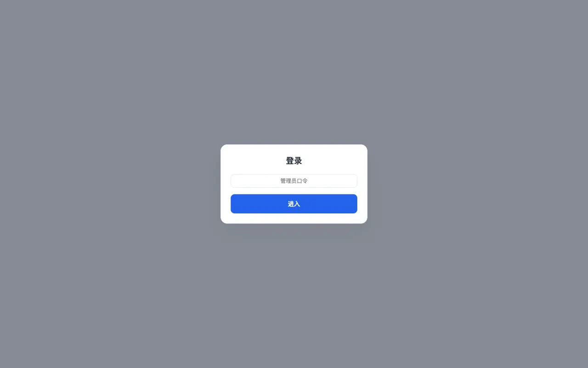
不绑也能用，直接拿 xxx.workers.dev 就行；绑了更好记，也方便以后换 Worker。
Worker → Settings → Domains & Routes → Add custom domain，填一个子域名，例如 sub.example.com。这个域名所在的 zone 必须已经在同一个 Cloudflare 账号下。
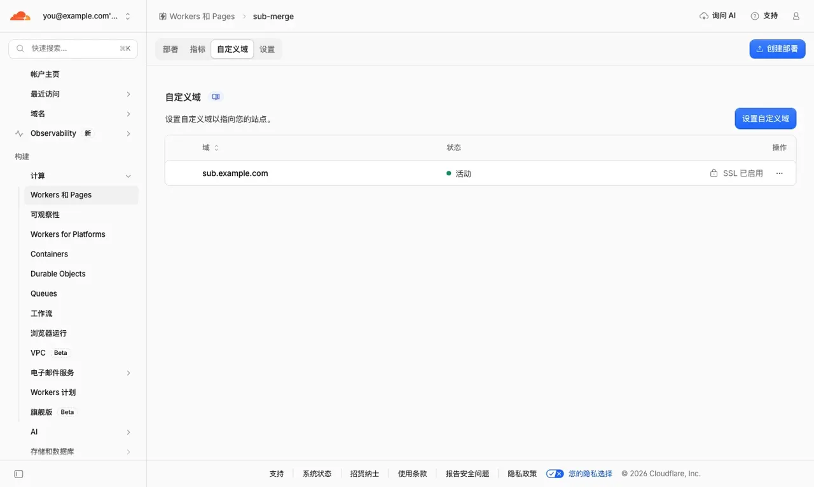
浏览器打开你的域名：
/api 能看到一段 JSON，说明 Worker 在跑；/ui；设过 UI_PATH 就是它的值，如 /admin）能正常登录，说明 D1 和口令也通了。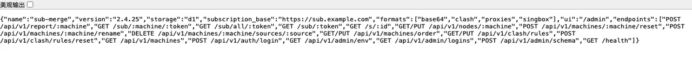
/api 返回这段 JSON，storage 是 d1、subscription_base 是你自己的域名，就说明全通了。改完绑定或变量没重新部署，域名能打开但会一直报 env.DB is undefined 或 401。
回到生成器，把域名和 REPORT_TOKEN 的值填到 ⑧ 里。
回到 https://singbox.dingdang.de5.net/：
https://你的域名（带 https://，结尾不要斜杠），上报凭证填 REPORT_TOKEN 那一串具体值 —— 就是第三步你为 REPORT_TOKEN 生成的那串 UUID，别把变量名 REPORT_TOKEN 本身填进去。填完生成器会重新算一遍 SSH 命令，命令里已经把这些值一并带上了。
这一步最容易翻车：命令是多行的，不能直接往终端对话框里粘。
滚到生成器最下方，复制 生成的 SSH 一键命令；打开面板下方的「命令编辑器」，把命令整段粘进编辑框，再点「发送」到当前会话。
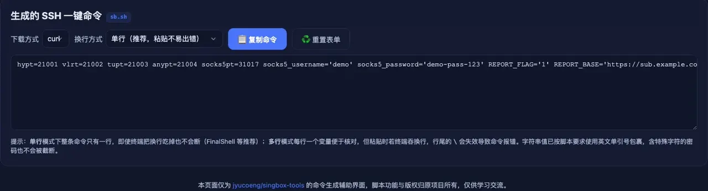
命令里已经带上了端口、协议开关、上报域名与 REPORT_TOKEN，形如：
REPORT_FLAG=1 \
REPORT_BASE='https://sub.example.com' \
REPORT_TOKEN='b7d4e2f1-8a3c-4f59-b1d0-6c92ae5713ff' \
hypt='21001' vlrt='21002' tupt='21003' anypt='21004' \
bash <(curl -fsSL https://raw.githubusercontent.com/jyucoeng/singbox-tools/main/sb.sh) rep装完先让它上报一次（REPORT_FLAG=1 时脚本装完会自动推一次，订阅里才会有节点），可以用 sb report status 看上报的结果以及状态（成功时间是 UTC）。
到这里只剩最后一步：把地址填进客户端。
要填进客户端的是订阅档案的地址：https://你的域名/sub/p/<档案名>/<SUB_TOKEN>。档案就是你勾选出来的那批节点，一条档案一条固定链接，顺序和格式都能固定下来：
https://sub.example.com/sub/p/hy2/你的SUB_TOKEN别和主订阅搞混：主订阅是 https://你的域名/sub/all/<SUB_TOKEN>，它把全部机器、全部节点塞进一条，不看你勾了什么，只有想一次性拿全量时才用。日常应该用订阅档案——它才是按你勾选的节点分组出来的那一条，机器增减、排序调整都不用改客户端。
只想拿单台机器的节点，用 /sub/<机器名>/<SUB_TOKEN>。
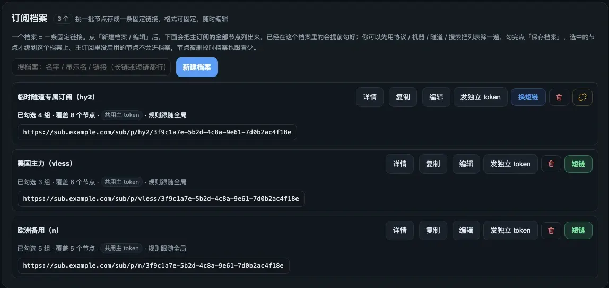
/sub/p/<档案名>/<SUB_TOKEN>（档案名取括号里那个短 id，如 hy2、vless）。主订阅 /sub/all/… 在下方的「订阅链接」区块里，这里看到的才是按勾选分出来的档案。90% 的问题都出在「名字写错」和「改完没重新部署」上。
按顺序检查三件事：
DB（一字不差，DB_NAME、DATABASE 都不认）；SUB_TOKEN / ADMIN_PASSWORD / REPORT_TOKEN 三个变量是否都加了；都对了还是不行，进 Worker 的 Logs 看实时报错，通常会直接写 env.DB is undefined 或 401。
先确认地址：默认入口是 /ui；如果你在环境变量里配了 UI_PATH，那么只有那个路径能打开，/ui 会返回 404 且没有任何内容。
再确认口令框里输的是 ADMIN_PASSWORD，不是 SUB_TOKEN。同一 IP 10 分钟内错 10 次会锁 24 小时，锁了就在 D1 Console 里执行：
DELETE FROM settings WHERE key LIKE 'login-fail:%'先看导入的是哪一种地址，两种情况原因完全不同：
/sub/all/<SUB_TOKEN>（主订阅，全部节点合并成一条）为空：说明节点根本没进订阅 —— 服务器还没成功上报过。在机器上执行一次 sb report，再用 sb report status 确认状态。/sub/p/<档案名>/<SUB_TOKEN>（订阅档案）为空：说明这个档案里一个节点都没勾。回后台打开「订阅档案」→ 编辑 → 把要的节点勾上 → 点「保存档案」（不点不生效），再刷新客户端。/sub/<机器名>/<SUB_TOKEN>（单机）为空：多半是机器名写错，名字要和后台「机器排序」里那一列一字不差。如果连主订阅都空，先查上报为什么失败，最常见的还是 401：核对 ⑧ 里的上报凭证是不是 REPORT_TOKEN（不是 SUB_TOKEN）、域名有没有带 https://、结尾是不是多了斜杠。
严格说只有两个是 token，另一个是登录口令，三个都可能被单独暴露：
SUB_TOKEN：订阅地址里的那一段 /sub/p/<档案名>/<SUB_TOKEN>，会发给客户端，最容易被别人看到；REPORT_TOKEN：只给服务器上报用（生成器 ⑧ 里填的那个），泄露了不会连带订阅链接；ADMIN_PASSWORD：WebUI 登录口令，不是 token，只用来进后台。不建议共用：泄露一处就全线失守，分开的话至少能只换一条。三个都用长随机串（UUID v4 就够）。也别在这三个值里放空格、引号、/、?、#：它们要拼进 URL 路径，会出现「看起来一样却匹配不上」。
完全可以。Worker 建好自带一个 https://<worker名>.<子域>.workers.dev 地址，直接把它填进 ⑧ 的服务端地址即可，第四部分整章跳过。
打开 https://你的域名 后面接你的入口路径（默认 /ui，设过 UI_PATH 就用它的值）用 ADMIN_PASSWORD 登录，可以改节点链接与显示名、上移下移机器顺序、增删手动节点。手动改过的机器会进入「手动接管」，继续自动上报也不会覆盖你的改动；点「恢复自动上报」就回到自动内容。
⑧ 里带红色星号 * 的两项（服务端地址、上报凭证）是必填。缺一项或都留空，结果就是不会上报——脚本照样把节点装好、SSH 命令照常生成，只是 sub-merge 那边一个节点都不会多，安装日志里会打印 ⚠️ 已开启自动上报，但还没配置上报地址/上报凭证，本次跳过。事后补上也简单：sb report 手动推一次即可。
⑦ 那栏跟上报无关，它是脚本给本机生成的临时订阅（https://域名/sub/UUID），留空或关闭都不影响节点安装，也不影响 sub-merge。
Workers 免费版每天 10 万次请求；D1 免费版 5 GB 存储、每天 500 万行读 / 10 万行写，个人订阅场景远远够用。只要不升级到付费套餐就不会产生费用。